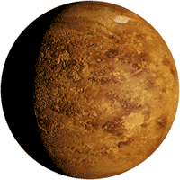

Általánosságban

A Vénusz a második bolygó a Naptól, keringési ideje 224,7 földi nap. Nevét Venusról, a szépség római istennőjéről kapta. A Hold után a legfényesebb objektum az éjszakai égbolton, legnagyobb látszólagos fényessége -4,6 magnitúdó. Maximális fényességénél még nappal is észrevehető. Mivel a Vénusz kering a Nap körül és közelebb van hozzá, mint a Föld, ezért néhány hónapig a Naptól keletre, később néhány hónapig a Naptól nyugatra látható, változó távolságra. A keringés mindkét szélső pontjának látszólagos távolsága a Naptól, azaz a bolygó legnagyobb kitérése 47,8°, vagyis a Napot legfeljebb három órával követi, illetve előzi meg az égen.
Szerkezete
A Vénusz a Naprendszer négy Föld-típusú bolygójának egyike, ami azt jelenti, hogy jellemzően kőzetekből épül fel. Méretében és tömegében nagymértékben hasonlít a Földhöz, s emiatt gyakran hívják a Föld testvérének is. Átmérője csak 650 km-rel kisebb a Földénél, a tömege a földinek 81,5%-a. A felszíni feltételek azonban a vénuszi sűrű szén-dioxid légkör miatt nagymértékben eltérnek. A vénuszi légkör 96,5 tömegszázaléka szén-dioxid, a fennmaradó nagyjából 3% pedig nitrogén.
Felszíne
A Vénusz felszínének nagy részét vulkáni tevékenységek sora formálta. A Vénuszon többször annyi vulkán van, mint a Földön, köztük 167 óriásvulkán, melyeknek átmérője a 100 km-t is meghaladja. Az egyetlen hasonló méretű földi vulkáni komplexum a Hawaii Nagy Sziget. Ez nem azért van, mert a Vénuszon erősebb az aktivitás, hanem mert a kéreg sokkal idősebb. A Föld kérge állandóan átalakul szubdukcióval a tektonikai lemezek határainál, átlagos életkora 100 millió év, míg a Vénusz felszínének korát 500 millió évre becsülik.